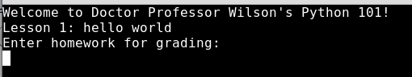

Nightmare-50 50 ---
Automated home work scoring my ass. https://shades-of-nightmare.openctf.com/nzpoixyucvkjwnerntasdfascdvasdfqwerqwe/nightmare-50/
Lets load the page and see what it does.

It looks like it runs python, lets try something.

it runs then closses the connection.... Notice that I used print(). This is python 3. If you try print "" it will error because that is python2 syntax.
To figure out the current directory and file names we will need to import os.

Well, that doesn't work. Can we at least run two lines of code?

Lets look at the built in functions and see if any can help us.
https://docs.python.org/3/library/functions.html
I think exec might be helpful. Notice it says "This function supports dynamic execution of Python code. objectmust be either a string or a code object.". Lets try testing by using python code as a string.

Awesome! Now lets see what the current directory is and the files in it.
REF: https://docs.python.org/3/library/os.html

Sweet! Now lets just read the flag.txt